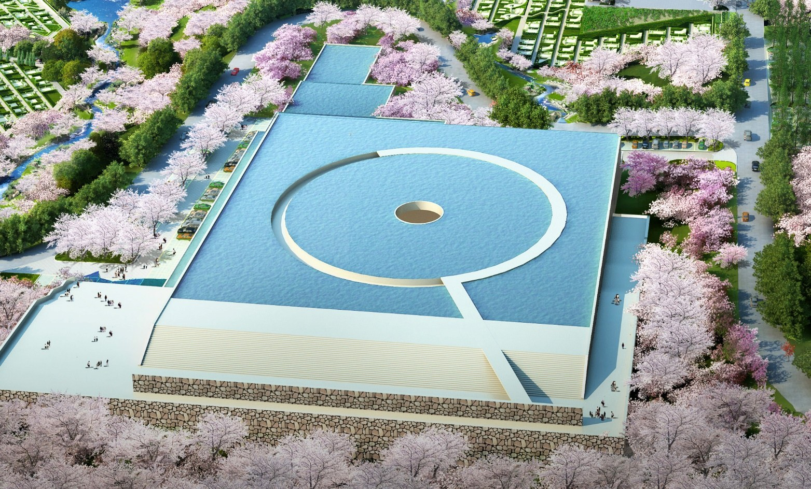
光之殿堂
以光、水、自然與幾何秩序，構築靜謐而莊重的紀念場域。
世紀陵園 ｜ 自然園區 ｜ 龍巖股份有限公司
Construction Progress
工程進度
相關進度資訊依龍巖官網更新資料呈現；點擊下方入口即可查看最新紀錄。
Architectural Master
安藤忠雄Tadao Ando
光之殿堂不是單純的紀念建築，而是一座讓人慢下來、安定下來的場域。安藤忠雄以光、水與自然，為人生最後的重要歸所，留下莊重而溫柔的空間感。光之殿堂不是單純的紀念建築，而是一座讓人慢下來、安定下來的場域。安藤忠雄以光、水與自然，為人生最後的重要歸所，留下莊重而溫柔的空間感。
光賦予美以戲劇性， 建築是一種媒介， 使人們去感受— 安藤忠雄
自然的存在。 把非凡注入平凡環境， 讓人們重新認識平凡。
安藤忠雄生於 1941 年，大阪出身，自學成才，未受正統建築教育，卻以幾何秩序、光影變化與對自然的深刻敏感，建立了獨樹一幟的建築語言。他的作品不追求表面裝飾，而是透過光的引入、水的流動、風的穿越，讓建築成為人與自然之間的精神媒介。安藤忠雄的建築，從不靠華麗裝飾取勝。他擅長用光、水、風與簡潔線條，讓人在空間裡安靜下來，也重新看見生命本身。光之殿堂延續的，正是這種讓人被空間溫柔安放的感受。
從早期的「住吉的長屋」到遍布日本與全球的公共建築，安藤的設計核心始終如一：讓人在空間中停留、沉澱，並重新感受生命的重量與美好。
代表獎項
從安藤建築看見光之殿堂
安藤忠雄的代表作品，常以光、水、自然與幾何秩序回應人的感受。以下以幾件作品為線索，說明這些建築精神如何在光之殿堂的場域、動線與空間感受中被看見。從教堂、美術館到自然園區，安藤忠雄的作品都在回應一件事：人如何在空間中被安放。光之殿堂，也延續了這份安定人心的力量。
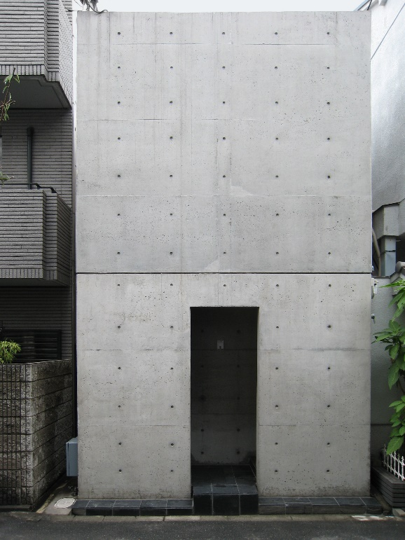
住吉的長屋
以極簡量體圍合生活空間，將天空、光線與雨水直接引入日常。看似剝奪了舒適，卻讓人與自然發生最直接的身體接觸。這是安藤建築哲學的原點：自然不是背景，而是空間的主角。安藤把天空、光線與雨水放進住宅裡，讓日常生活直接與自然相遇。
這份信念貫穿光之殿堂每一條廊道：光不是裝飾，水不是景觀，風不是背景——它們都是空間的主角，與人共同呼吸。這也是光之殿堂想留下的精神：讓自然不只是窗外風景，而是陪伴人的一部分。
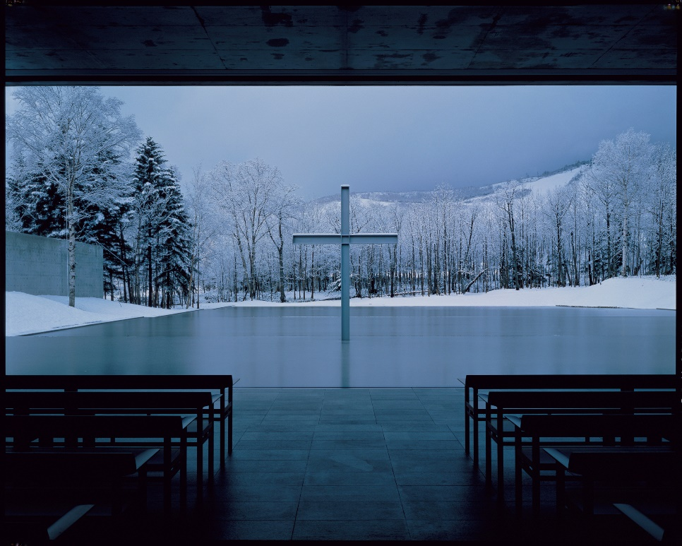
水之教堂
以水面作為通往神聖的媒介，巨大的玻璃幕牆可完全開啟，讓室內與水面、森林、天空連為一體。水中的十字架倒映天光，使人感受到時間的靜止與生命的流動。水面、森林與天光一起進入空間，讓教堂安靜得像一段停下來的時間。
光之殿堂的 7.5 米觀景窗與水瀑景觀，繼承了以水為媒介的設計信念，讓流水的聲音與動態貫穿場域，使紀念空間保有自然的呼吸感。光之殿堂中的水瀑與觀景窗，也是在營造這種被自然包圍、被安放的感受。
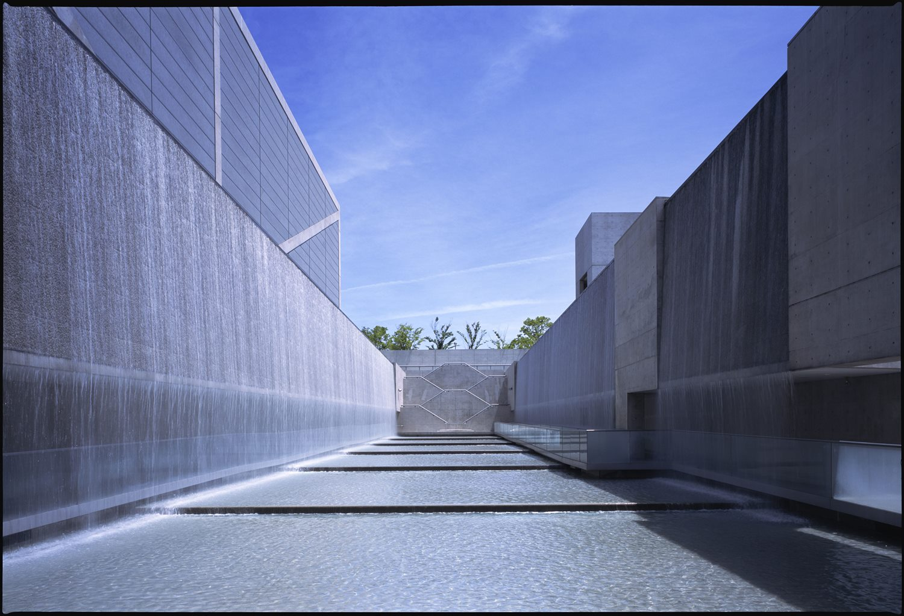
狹山池博物館
以水庭、長廊與層層落水建立參觀序列，讓人沿著水聲與光影逐步進入展覽空間。建築不只是收藏歷史的容器，也把水利工程、土地記憶與身體經驗重新連結。在狹山池博物館，參觀不是直接抵達，而是沿著水聲、長廊與光影慢慢進入。
光之殿堂的水瀑景觀與長向廊道，同樣以水聲、反射與行進節奏引導情緒，使紀念空間從入口到各主題區域形成逐步沉澱的體驗。這種有層次的行進感，也像光之殿堂從入口到各主題空間的情緒轉換。
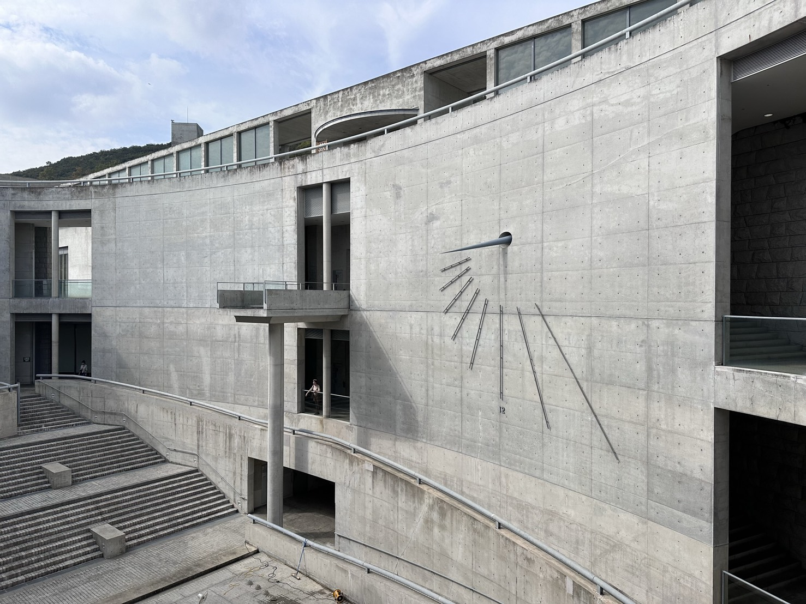
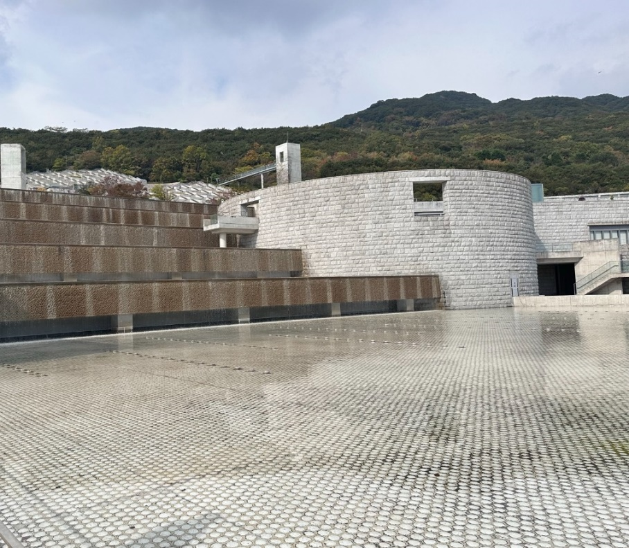
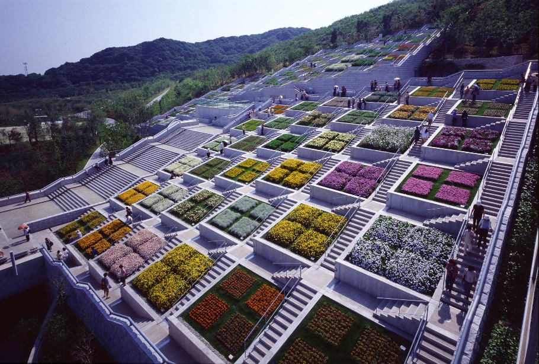
淡路夢舞臺
淡路夢舞臺位於曾被開採的山坡地，安藤忠雄以建築群、水景、貝之濱與百段苑重新組織地景，讓人沿著階梯、平台與庭園移動時，感受到自然被修復、被重新召回場域之中。淡路夢舞臺把曾被開採的土地，重新變成可以行走、停留、感受自然的場域。
這份「讓建築與自然重新共生」的精神，能呼應光之殿堂對山林、櫻花、水瀑與光影的運用：自然不是裝飾，而是承載記憶與情感的場域主角。光之殿堂也不是只把自然放在外面，而是讓山林、櫻花、水景一起成為紀念的一部分。
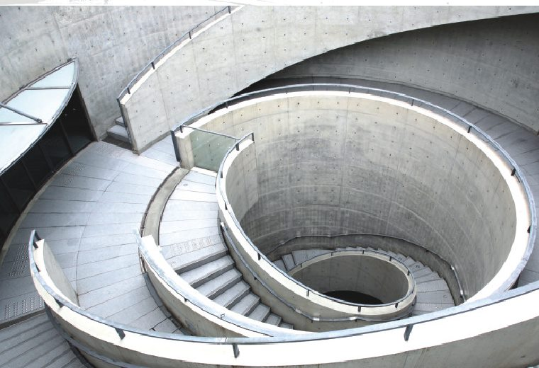
兵庫縣立美術館
面向大阪灣的大型公共建築，以圓弧坡道、廣闊水景與開放動線整合城市、海洋與建築，創造充滿儀式感的公共場域。在神戶臨海的開闊場域裡，建築讓人不只是看展，也能停下來感受光、風與水岸。
光之殿堂同樣以山林與天空為空間的延伸背景，讓紀念場域不只是一棟建築，而是一段讓人從容凝視生命的完整旅程。這種讓人願意停留的力量，也是光之殿堂空間安排裡很重要的感受。
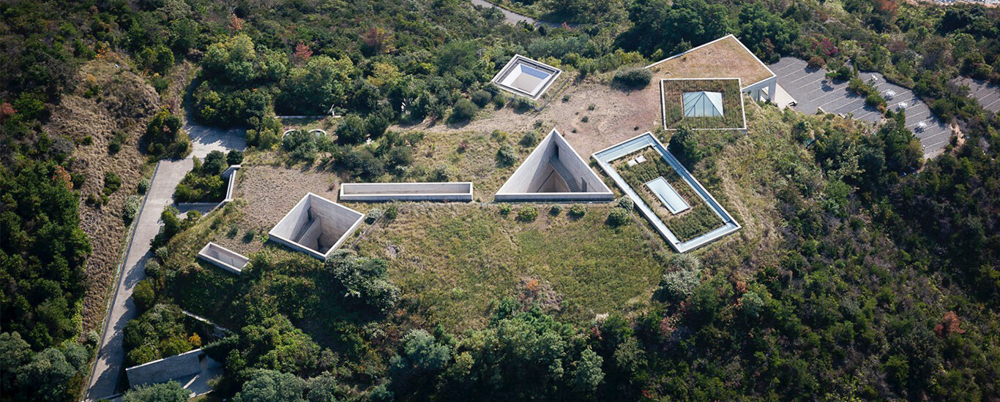
地中美術館
地中美術館大部分空間藏於地下，讓建築退入地景之中，盡可能保留瀨戶內海的自然景觀。這呈現安藤忠雄重要的建築信念：建築不是破壞環境，而是以克制的姿態融入自然，讓光、土地與人的行進經驗共同成為作品的一部分。地中美術館把建築藏入土地，不破壞自然，而是讓光、地景與人的行進一起成為體驗。
光之殿堂也延續這份精神，讓建築、水景、櫻花與光影融入山林場域；來訪者沿著動線、視線與空間轉折前行，在移動過程中逐步沉澱心境。光之殿堂也延續這份精神，讓建築、水景、櫻花與光影融入山林場域；並透過動線與空間轉折，引導來訪者逐步沉澱心境。
更多代表作品
Architectural Features
光之殿堂建築特色
安藤忠雄的建築信念，在光之殿堂的山林自然場域中具體落地。從每一道光縫、每一面水幕，
到圍繞建築的萬株櫻花，這裡不是陳設商品的空間，而是一段讓人感受自然、記憶與生命的完整旅程。光之殿堂將安藤忠雄的建築信念落在山林場域中。光、水、櫻花與幾何秩序，共同形成一段感受自然、記憶與生命的旅程。
光與陰影
光不是裝飾，是安藤忠雄與人說話的方式。走進光之殿堂，自然光從廊道頂端、7.5 米景觀窗與包廂壁面的縫隙中透入，隨時間流動變換，讓每次拜訪都有不同的光景。
水與生命
水的聲音讓人安靜下來。瀑布在場域中持續流動，水聲成為儀式的一部分；水波意象從入口延伸至室內，串連每個人走進來時的第一個呼吸。
自然與永續
光之殿堂不是蓋在自然旁邊，它是自然的一部分。建築坐落於山林與萬株櫻花之中，不論站在哪個角度看出去，都是一幅四季流動的畫。
幾何與秩序
清楚的動線，讓人知道自己在哪裡、下一步往哪走。圓形水域、長向廊道與六大商品區域的配置，共同建立穩定的儀式感——讓每次造訪，都感覺值得鄭重對待。
光之殿堂整體特色
山林、水景與紀念建築
光之殿堂將建築置於自然場域之中，讓山林、水面與櫻花成為空間經驗的一部分，而不是只停留在外部景觀。
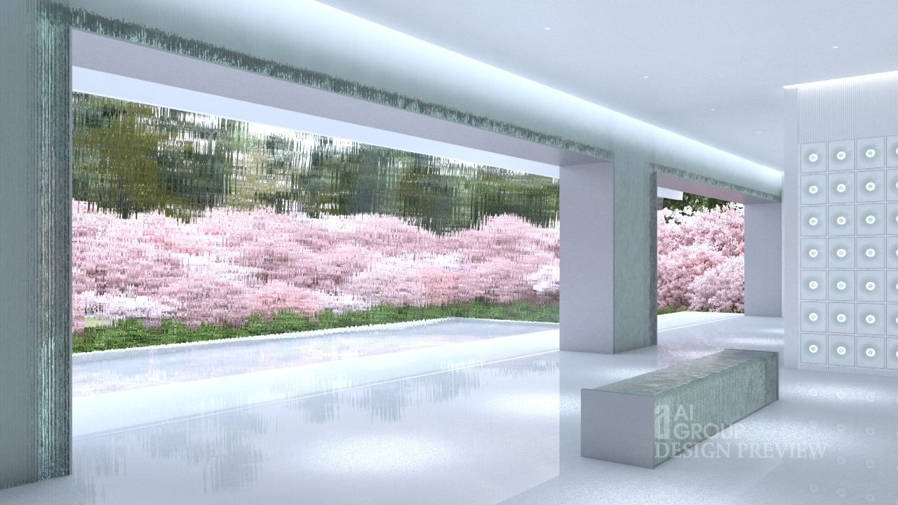
水瀑景觀區
以流動的水聲、光影與大面積景觀牆建立空間記憶，讓參訪者在行進中感受安定、沉靜與祝福。
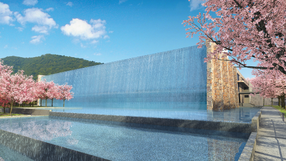
外部水景與櫻花場域
水景、櫻花、山林與建築量體彼此銜接，讓來訪者在抵達之前，就先感受到由自然進入紀念場域的轉換。
中鹿營造為日本鹿島建設（Kajima Corporation）百分之百出資的台灣現地法人，鹿島建設在台灣的事業歷史超過 100 年，自 1899 年即開始承接台灣的鐵路、水利等重大基礎建設，是台灣建築與工程界最具信賴基礎的施工夥伴。中鹿營造為日本鹿島建設在台灣的現地法人，承襲鹿島嚴謹的施工品質與工程管理能力。
中鹿營造承襲日本鹿島建設「現場第一主義」的施工精神，以嚴謹的品質管理與精密的工程執行能力，確保每一個細節符合設計師的原始意圖。由安藤忠雄設計的光之殿堂，正是在這份一絲不苟的工匠精神下得以實現。光之殿堂由安藤忠雄設計，需要高度精準的施工執行，才能完整呈現原始設計意圖。
Product Series
商品系列
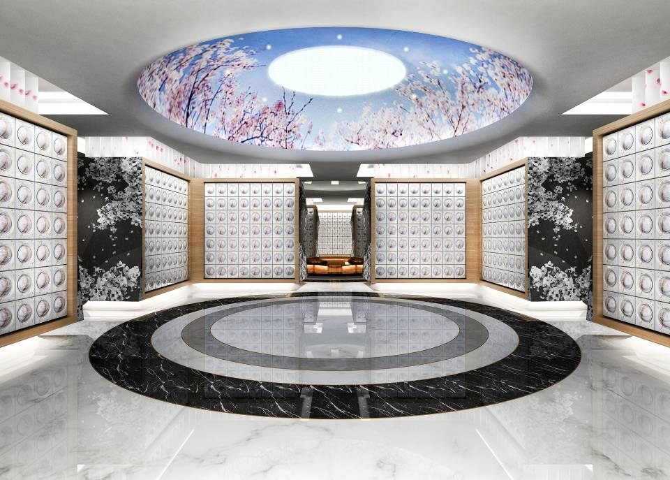
01 · Binfen
櫻悅繽紛
以櫻花、金色流水與精緻瓷器工藝，呈現溫柔、明亮且帶有祝福感的紀念意象。以櫻花、流水與瓷器工藝，呈現明亮溫柔的祝福感。
Design Concept
設計概念
櫻悅繽紛以櫻花、陽光、樹木、水波與彩蝶等自然意象，作為迎接參訪者的空間序曲。透過互動投影與柔和光感，讓每一步都像被祝福引導，從日常走入溫柔明亮的紀念場域。以櫻花、陽光與彩蝶作為迎賓意象，讓參訪者從第一步就感受溫柔祝福。
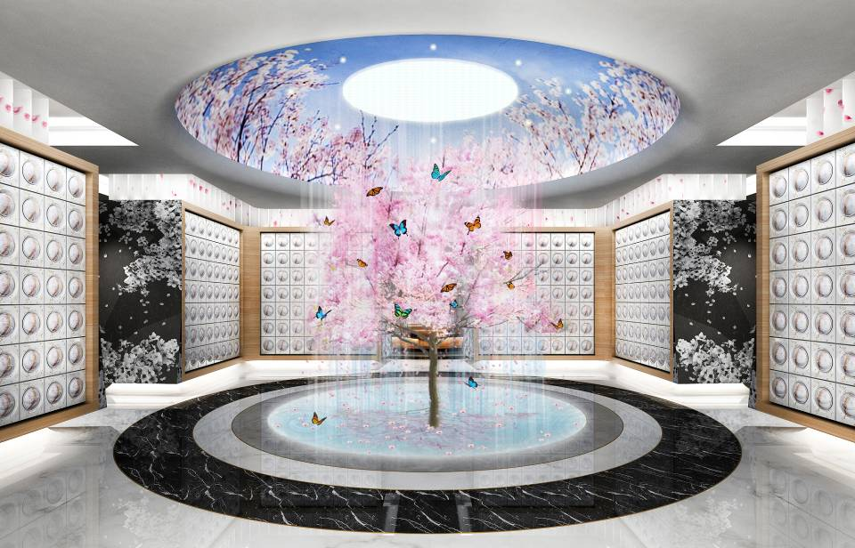
空間設計概念
空間以櫻花盛放、流水光影與自然景致為主軸，將祝福、重生與安定感轉化為可被看見的場景。參訪者進入廳堂時，光影與投影意象隨動線展開，使紀念空間保有溫度，也更容易被理解。櫻花、流水與光影隨動線展開，讓祝福與重生意象更容易被感受。
迎賓光影
以櫻花、日光、樹影、水波與彩蝶作為迎賓意象，讓自然景色在空間中流動，形成柔和、安定且具儀式感的第一印象。以櫻花、日光與彩蝶迎接參訪者，形成柔和而有儀式感的第一印象。
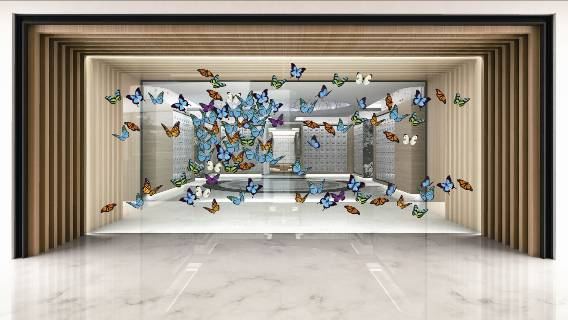
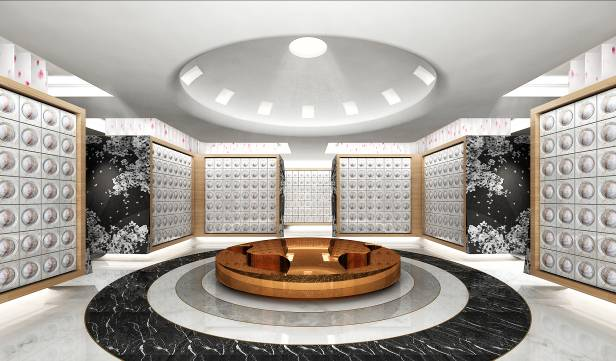
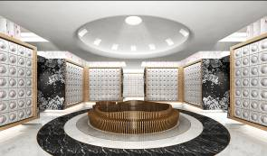
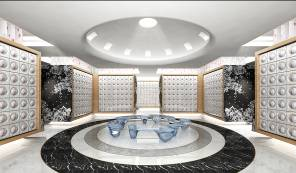
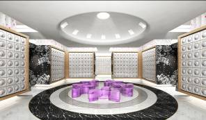
商品特色
核心賣點在於「櫻花 × 金色流水 × 大倉白瓷」的完整組合。面板以大倉陶園白瓷、18K 金與七色粉釉櫻花呈現精緻祝福感，空間搭配互動式迎賓光影，讓櫻花、流水與彩蝶意象成為最容易被記住的視覺焦點。以大倉白瓷、18K 金櫻花與迎賓光影，形成溫柔明亮且容易記住的祝福感。
設計團隊
以瓷器工藝與空間敘事共同完成櫻花、流水與重生意象，讓商品不只是殿位，而是一段可被感受的祝福場景。以瓷器工藝與空間敘事，完成櫻花、流水與重生的祝福場景。
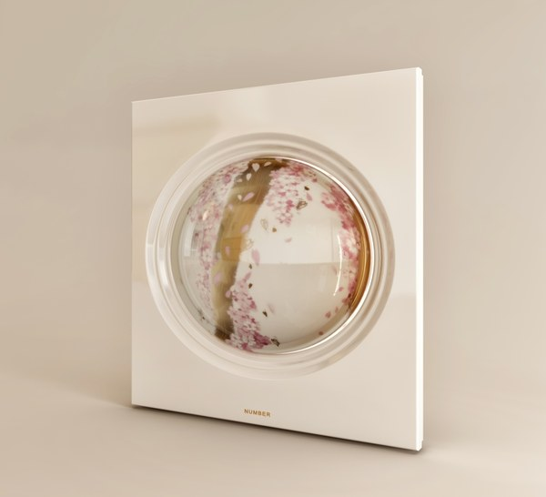
此系列面板以大倉白瓷為基底，結合 18K 金與七色粉釉櫻花。大倉陶園以 1460°C 高溫燒製出極白且堅硬的「大倉白」，讓面板兼具溫潤質感與祝福意象。
以空間尺度與動線，把櫻花、彩蝶與流水意象整合進廳堂，讓迎賓區形成清楚而柔和的體驗路徑。團隊曾累積 IF 金獎、英國新銳建築師獎與誠品商業空間等設計成果。
商品規格
樓層與平面配置一樓
從所在樓層到空間分區，快速理解櫻悅繽紛在光之殿堂中的位置與動線關係。
此為規劃階段圖面，最終尺寸圖說請以核定建照圖為準
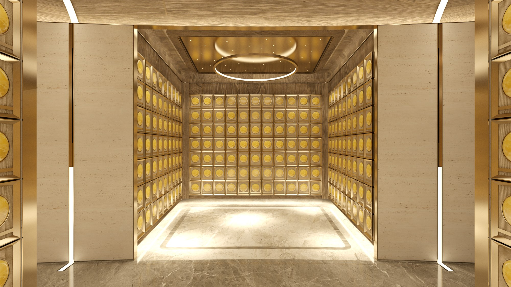
02 · Ji Qing
吉慶
以「光雲」與祥瑞之境為主題，透過金屬、石材、木質與光線，營造明亮而尊榮的吉慶氛圍。以光雲與祥瑞意象，營造明亮、柔和且尊榮的空間氛圍。
Design Concept
設計概念
「光雲」呈現的即是陽光照射後，光線穿透雲朵的美麗印象。室內空間以動感的線條、奢華的質地、層次的光線與尊榮的包廂，完美傳達「Less is more」的極簡風華。光線穿透雲朵的柔亮印象，轉化成吉慶明亮、尊榮又不過度繁複的空間感。
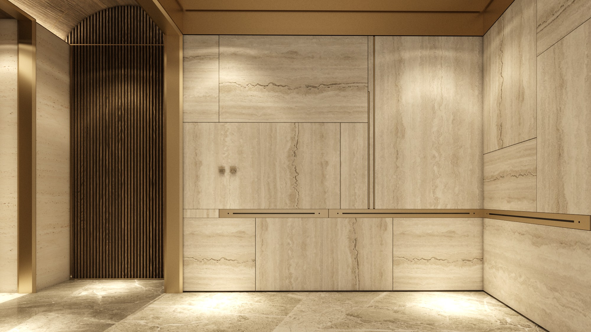
玄關的亮
閃耀著光芒的玄關，象徵沈浸於陽光的照耀，在明亮且柔軟的包覆中，充滿了祝福與期待。
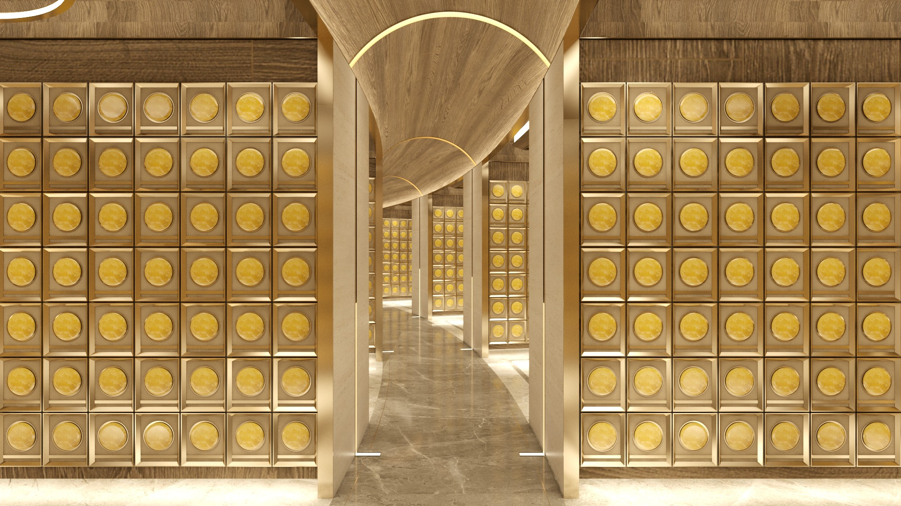
廊道的弧
一整條弧形廊道天花，讓空間更為柔和，將視覺軸線延伸，就像彩虹天橋，幻化成前往天境的小徑。
內玄關木紋石
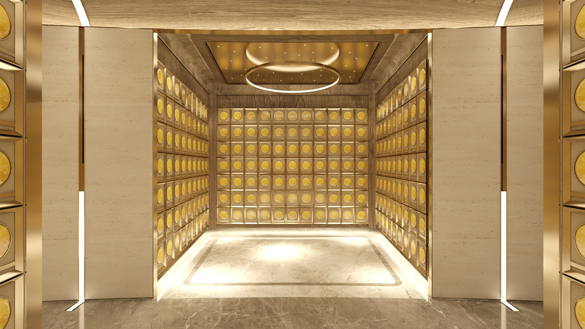
豪華個人室包廂
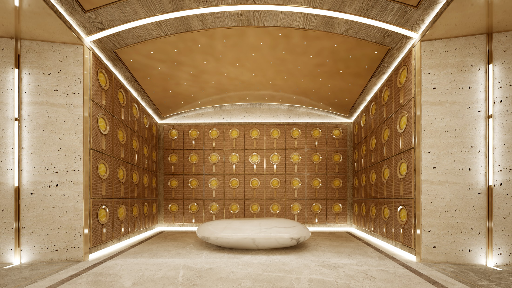
家族室包廂
商品特色
吉慶的辨識重點，是以敦煌祥瑞意象轉化成尊榮材質語彙。金屬飾板、金屬編織網與大倉陶園瓷板共同構成面板層次，既有金縷衣般的柔亮光澤，也有包廂尺度與弧形廊道帶出的穩定儀式感。以金屬飾板、金屬編織網與大倉陶園瓷板，呈現柔亮尊榮的吉慶質感。
設計團隊
由空間設計與瓷器工藝共同構成吉慶的尊榮感，從廊道曲線、光雲意象到金屬面板，形成完整的祥瑞氛圍。由空間設計與瓷器工藝，共同完成光雲意象與尊榮質感。
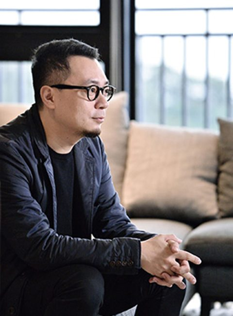
「空間元素不只是裝飾，而是必須與結構體緊密結合。」多次榮獲德國 iF 獎、美國 IDA 獎、英國 Andrew Martin 獎，以低調華美的設計語彙著稱。
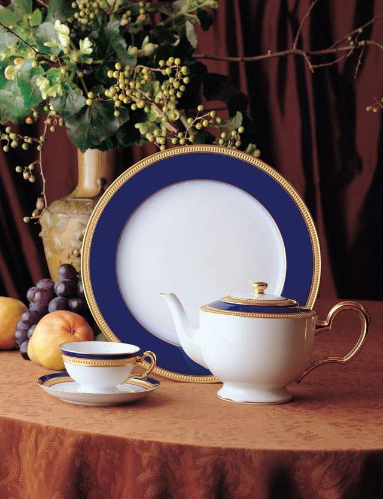
為呈現光雲細緻的金色之境，面板以精湛工藝製成，選用「金屬編織網」堅硬且具柔性的材質，輔以細緻縫線與金屬收邊，如同金縷衣般的質感光澤，突顯整體箱架質感。
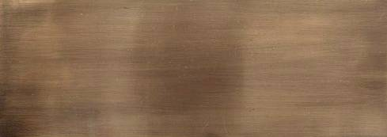
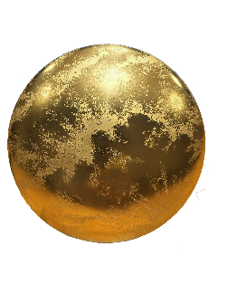
商品規格
樓層與平面配置一樓
透過商品區位與空間分區，對照吉慶個人室與家族室的配置關係。
此為規劃階段圖面，最終尺寸圖說請以核定建照圖為準
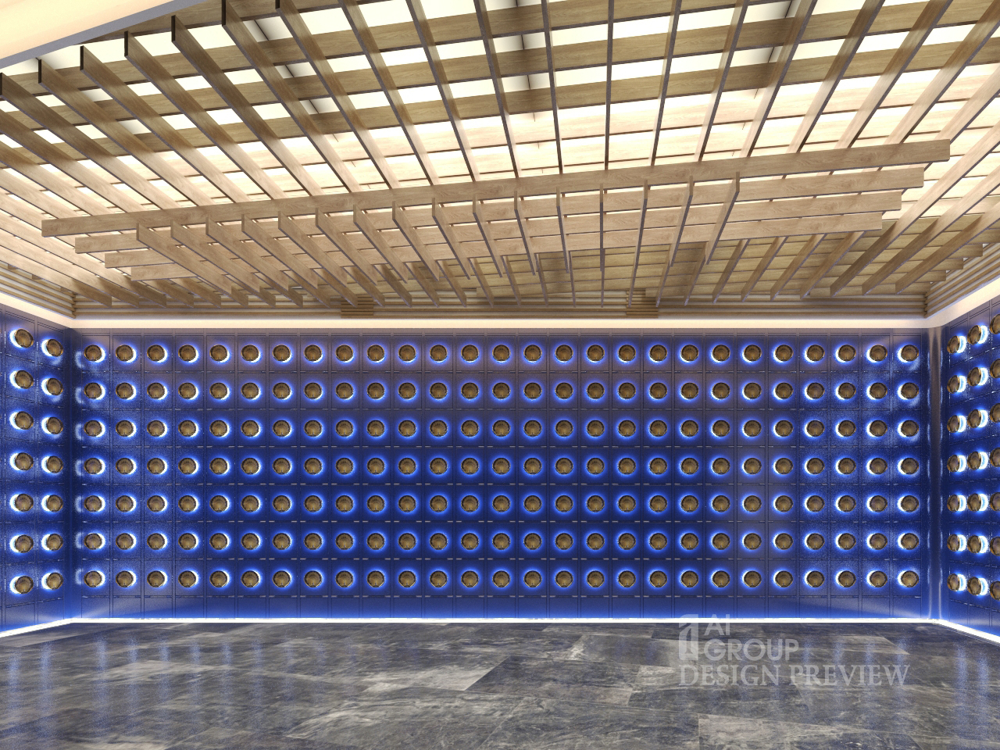
03 · Tao Hua Yuan
桃花源
以山水意境、三進式空間與孔雀工藝為核心，從入口玄關、
曲折廊道到挑高包廂，引領心境逐步轉入靜謐而開闊的紀念場域。以山水、廊道與孔雀工藝，帶出由靜入境、豁然開朗的紀念空間。
Design Concept
設計概念
引用桃花源山水意境為空間設計主軸，以三進式空間設計，逐層展現「林盡水源，便得一山」的意境；從入口玄關的水墨景致、廊道的曲折行進，到豁然開朗的挑高包廂，讓訪者親身體驗陶淵明筆下的世外桃源。以三進式動線呈現桃花源意境：先入水墨玄關，再經曲折廊道，最後抵達開闊包廂。
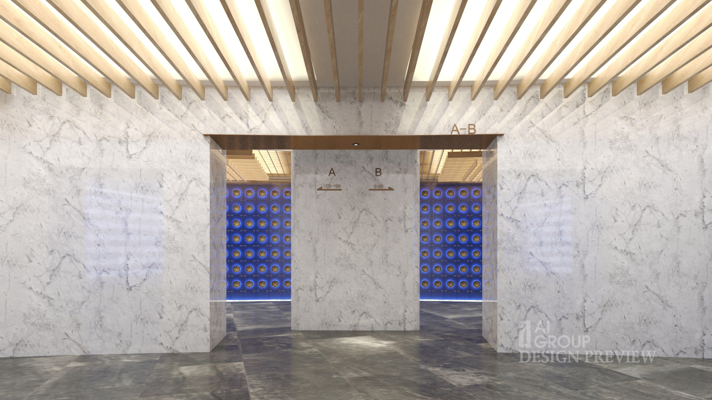
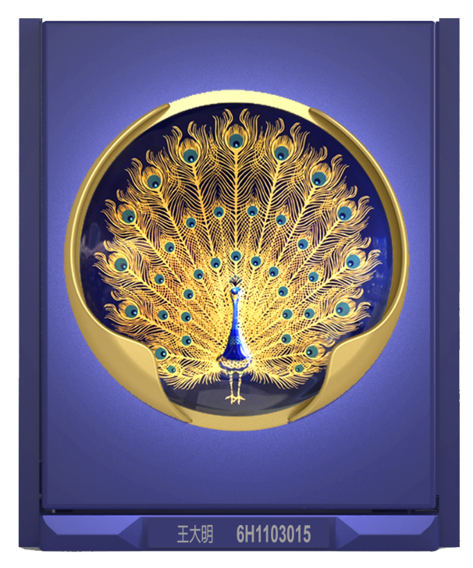
動態入口玄關
入口以桃花源意象的水墨畫作為主視覺，透過 LED 景觀與水聲營造動態自然景觀；水墨山水、桃花與光影隨畫面流動，使桃花源不只是靜態圖像，而是一段能被看見、被聽見的空間序曲，引導參訪者從日常步入更安靜、更完整的紀念場域。入口以水墨山水、桃花光影與水聲，讓參訪者從日常慢慢進入安靜的紀念場域。
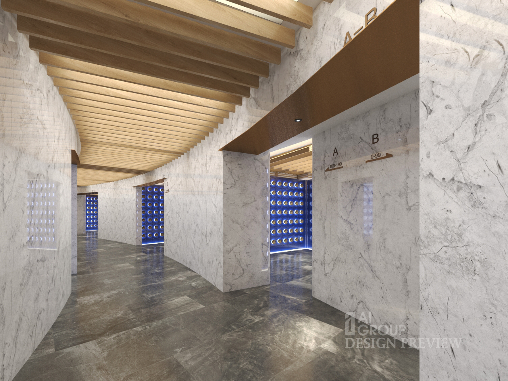
廊道
廊道以弧形動線與波浪格柵天花，營造「初極狹，才通人」的行進感；視線被引導、步伐被放慢，最後進入更開闊的紀念空間。弧形廊道與波浪天花放慢腳步，帶出轉折後的開闊感。
孔雀面板設計
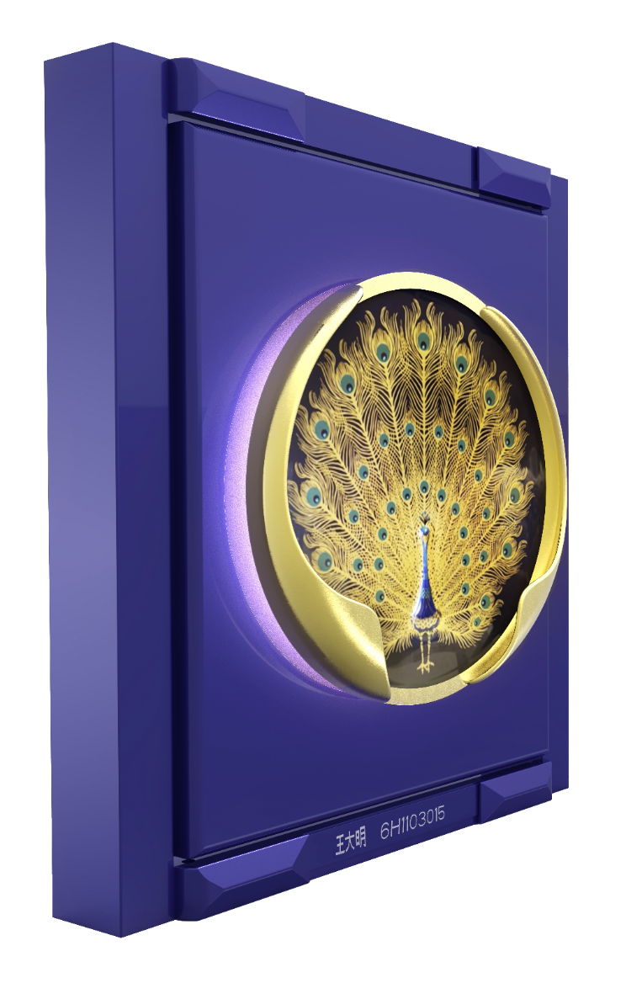
孔雀面板立體示意
大包廂・豁然開朗
商品特色
桃花源的商品差異在於「三進式動線」與「孔雀工藝面板」並重。空間由入口玄關、曲折廊道到近四米挑高包廂，形成逐步開展的參訪節奏；面板則以大倉陶園深藍瑠璃、24K 金與孔雀圖騰，強化富貴吉祥與尊貴識別。以三進式動線搭配孔雀瑠璃面板，呈現由靜入境、豁然開朗的尊貴感。
設計團隊
以豪宅級空間規劃、水墨山水意象與日本大倉陶園工藝，將山水、孔雀、藍寶石瑠璃與金色細節轉化為桃花源的精神意象。結合豪宅級空間規劃與大倉陶園工藝，呈現山水、孔雀與金色細節。
承襲忠泰建設豪宅規劃水準，旗下含括空間、產品與形象體系，曾參與誠品信義旗艦店、誠品京華城等作品，並累積 IF 金獎、紐約建築設計榮譽獎等國際獎項經驗。
以鈷藍色獨創釉料，高溫燒製出如藍寶石般深邃的瑠璃面板，搭配 24K 金孔雀浮雕與不鏽鋼鍍鈦圓環。孔雀羽毛象徵富貴、吉祥與守護，也呼應桃花源對安居與福澤的想像。
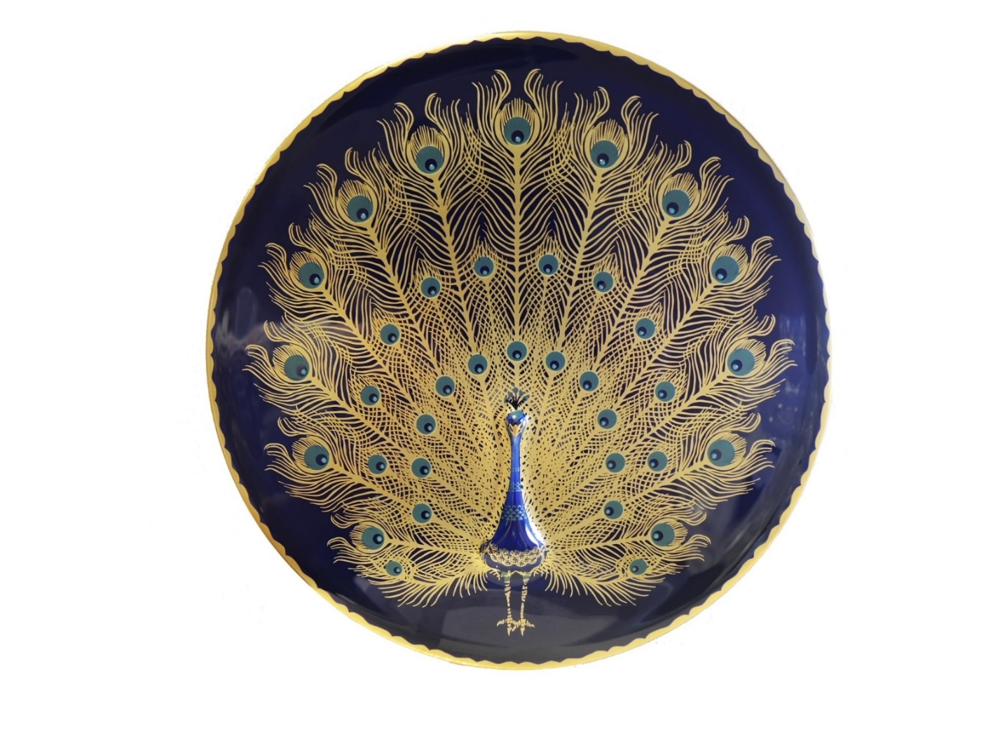
商品規格
樓層與平面配置一樓
從樓層位置到三進式空間，理解桃花源如何形成沉澱後開闊的參訪節奏。
此為規劃階段圖面，最終尺寸圖說請以核定建照圖為準
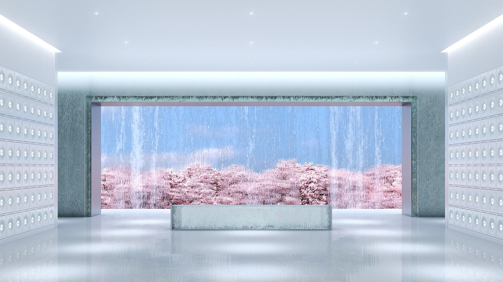
04 · Waterfall of the Light
光之瀧
以「生命之水」為設計核心，將瀑布的流動、水波與光影轉化為純淨而壯闊的空間意象。以生命之水為核心，將瀑布、水波與光影轉化為純淨的空間意象。
Design Concept
設計概念
水是萬物的起源、生命的必需，安藤大師以「生命之水」為設計概念，引自然入室，將瀑布的流動與透明感、水波及光影的變化，透過各種透明材質的搭配運用，幻化出猶如自然絕景般的室內空間。以生命之水為概念，把瀑布流動、透明材質與光影變化帶入室內。
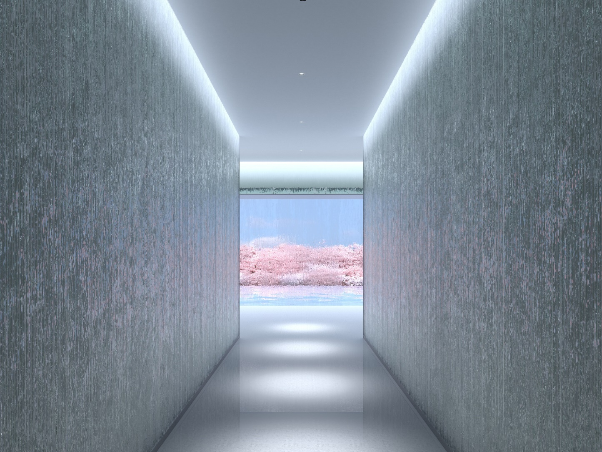
入口廊道
入口廊道利用堆疊玻璃形塑流瀑意象，在緩慢步行中，空間流瀑映入眼簾，大片櫻花林與水景逐步展開，形成由日常進入紀念場域的自然之徑。
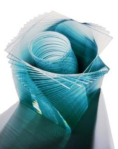
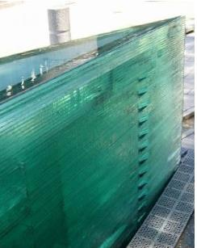
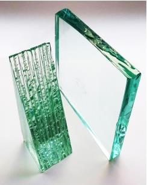
水與玻璃材質細節
異材質的結合，完美呈現了水的剔透和動感，呼應整體空間水的意象，在光線的照映和反射之中，更增璀璨風貌。
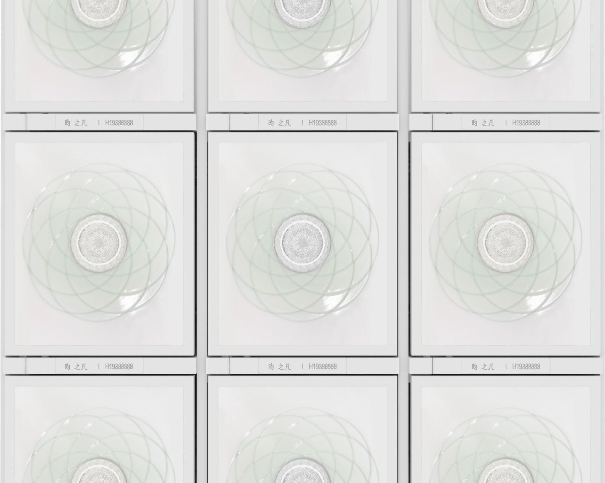
白瓷與玻璃切子
延續空間的生命之水，面板以漣漪為設計概念。精緻白瓷刻劃水波波動的寧靜之美，中央玻璃切子則呈現水的純淨透明質感。
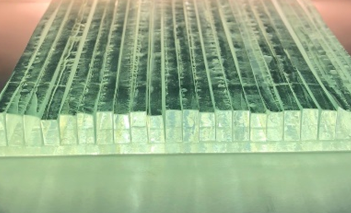
自然質感
將片片玻璃層疊排列，將窯燒溫度控制在 750-800°C 左右，讓玻璃自然融合，也在表面呈現不規則的自然紋理。每一片都是獨一無二的創作，折射出變幻無限的光澤。
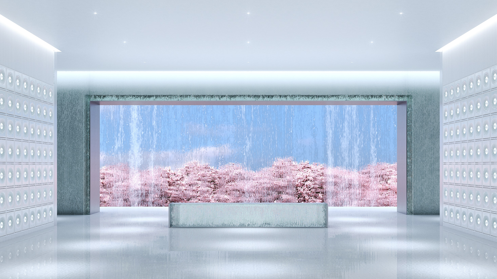
7.5 米觀景窗
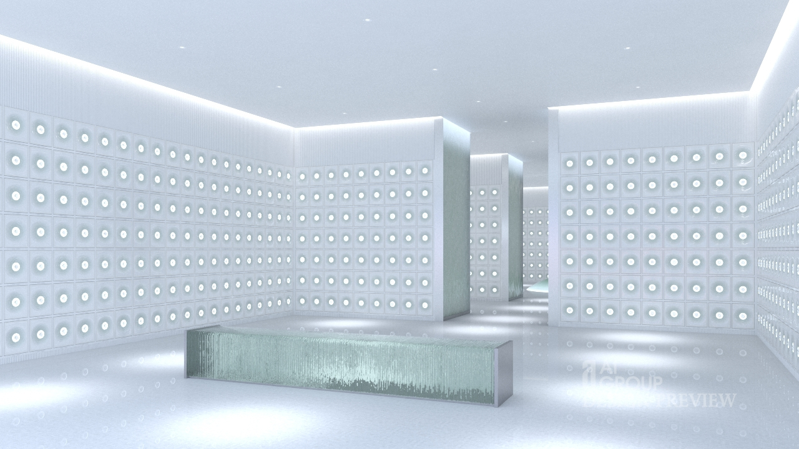
包廂區
入口廊道
水瀑景觀區
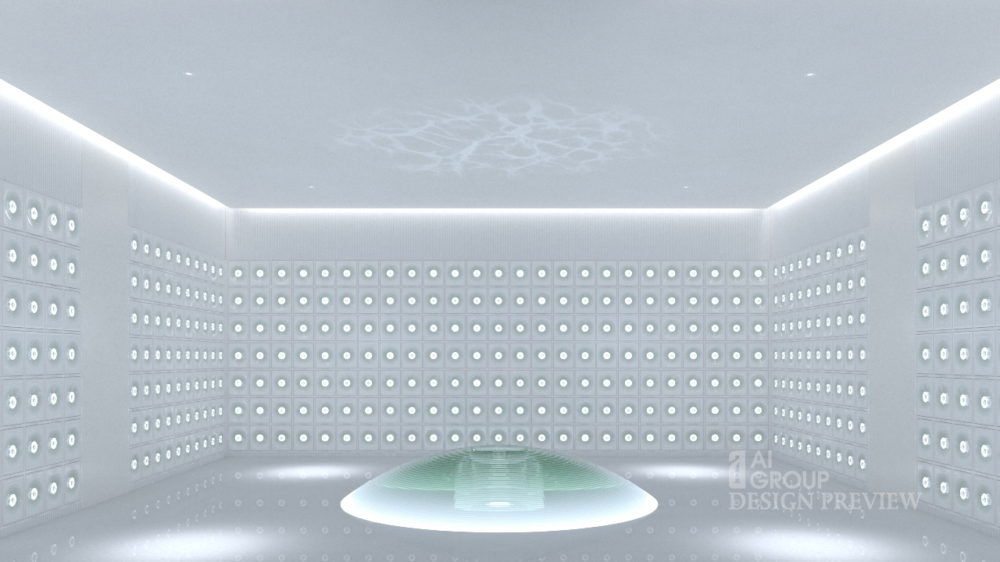
藝術裝置包廂區
商品特色
光之瀧最明確的賣點，是全館唯一由安藤忠雄建築研究所全程主導的塔位商品。7.5 米觀景窗、堆疊玻璃、漣漪白瓷與玻璃切子共同呼應「生命之水」，讓建築語彙、空間景觀與殿位面板保持一致。全館唯一由安藤忠雄建築研究所全程主導，並以觀景窗、堆疊玻璃與漣漪面板呼應生命之水。
設計團隊
由安藤忠雄建築研究所主導，將光、水與透明材質的建築語言延伸至商品本身，使空間與殿位設計一脈相承；並由築內國際執行團隊共同完成細節整合。由安藤忠雄建築研究所主導，讓光、水與透明材質從空間延伸到殿位本身。
全程由安藤忠雄親自操刀，為龍巖唯一全安藤忠雄設計之塔位商品，體現建築空間與商品設計的一脈相承。
商品規格
樓層與平面配置一樓
以商品所在位置與 A/B/C 分區，掌握光之瀧的景觀、包廂與非包廂配置。
此為規劃階段圖面，最終尺寸圖說請以核定建照圖為準
05 · Da Guan
大觀
以「生命之樹」與開闊視野為主軸，透過通透空間、木格柵與自然意象，帶出生生不息的大器感。以生命之樹與開闊視野，帶出生生不息的大器感。
Design Concept
設計概念
「觀」有看與查看之義，大觀代表的即是「從大處著眼」。透過通透的空間感成就開闊視野，外玄關以白色大理石與木作刻溝展開序曲，內玄關則以木格柵自地坪延伸至天花，與生命樹意象交織出生生不息的空間感。以開闊視野、木格柵與生命樹意象，呈現生命延續、生生不息的空間感。
外玄關
白色大理石地板與細緻的木作刻溝，宣告著簡潔而大器的空間即將展開；弧形曲面軟化方正稜角，並一路銜接內玄關的木格柵與生命樹意象，讓溫暖大器的空間感由入口延伸至天花。
單一殿位面板
整體牆面排列
外玄關門廳
大包廂
商品特色
大觀的商品重點在於雙位室尺度與開闊視野。包廂寬達 7.5 米，搭配錯落流瀑與生命之樹意象，呈現家族傳承的穩重感；面板以淡金色基底、鏡面黑烤漆與金色櫻花構成，讓自然意象落在具體材質與門片細節上。以 7.5 米開闊包廂、生命之樹與金色櫻花面板，呈現家族傳承的大器感。
設計團隊
以建築師的空間尺度與自然觀，將生命之樹、木格柵與開闊視野整合成大器而溫潤的雙位殿位場景。以建築尺度與自然觀，整合生命之樹、木格柵與開闊視野。
擅長現代風格與格柵語彙，重視人、建築、自然的結合。代表作品涵蓋台北帝寶周邊、皇翔御琚、泰安連雲、海納川，以及新竹天琚、台中科博雙星、高雄仰德等頂級豪宅。
商品規格
樓層與平面配置二樓
大觀位於二樓，以獨立區位呈現開闊視野與雙位室配置。
此為規劃階段圖面，最終尺寸圖說請以核定建照圖為準
06 · City of the Light
光之城
東方生命觀與法式精品美學的完美融合，從巴黎戴高樂廣場汲取靈感，呈現永恆記憶的光芒。結合法式精品美學與東方生命觀，呈現永恆記憶的光芒。
Design Concept
設計概念
靈感取自巴黎奧斯曼式公寓的建築語彙，由 Chanel 藝術顧問 Matthieu Rochas 主導設計，以東方生命哲學融入法式美學，打造龍巖首個法式精品風格空間。以巴黎公寓語彙與精品美學，打造明亮、精緻且具儀式感的紀念空間。
法式精品空間
以白、金與柔和曲線打造明亮純淨的紀念空間，將東方生命觀轉化為法式精品語彙；空間不以繁複裝飾取勝，而以線條、比例與光感呈現安定而精緻的氛圍。
MOF 星芒雕刻面板
以鋁合金搭配緞面香檳金塗層，透過精密金工與細緻雕刻形塑門片線條；門心以星芒為視覺焦點，由法國最佳工匠（MOF）Nicolas Salagnac 親手雕刻，以獎章級工藝語彙呈現光芒與榮耀，讓面板成為值得被凝視的藝術細節。
商品特色
光之城的可介紹重點，是把法式精品工藝落到面板細節。緞面香檳金鋁合金、精密金工線條與 MOF 工匠親手雕刻的星芒門心，讓殿位本身具備精品物件般的細緻度與收藏感。以香檳金鋁合金、精密金工與 MOF 星芒雕刻，呈現精品等級的細節。
設計團隊
光之城結合法式藝術指導、精密金工與 MOF 雕刻工藝，讓每一處星芒、金屬線條與門心細節都具備精品等級的完成度。結合法式藝術指導、精密金工與 MOF 雕刻，完成精品等級的細節。
畢業於法國培寧根高等圖像學校，長期擔任 Chanel、LVMH、Chloé 等頂尖精品品牌藝術顧問，創立 Since 設計公司。
法國精密金屬加工專家，曾修復羅浮宮、凡爾賽宮、巴黎喬治五世酒店及倫敦帕丁頓車站的金屬藝術構造。
擁有法國最佳工匠（MOF）稱號，曾負責製作法國參議院議長獎章及法蘭西共和國總統官方獎章。
樓層與平面配置一樓
從整體位置到空間格局，掌握光之城於光之殿堂一樓的配置與動線。
此為規劃階段圖面，最終尺寸圖說請以核定建照圖為準